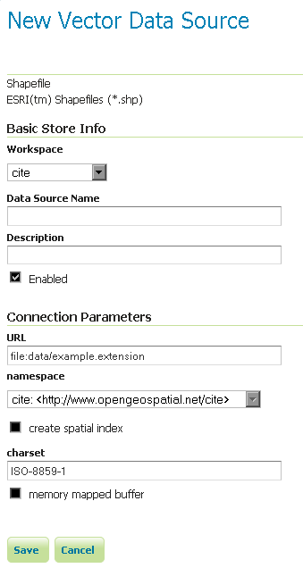

Shapefile¶
Shapefile은 유명한 지리공간 벡터 데이터 포맷입니다.
주석
GeoServer가 shapefile 포맷을 충분히 지원하기는 하지만, 데이터 생산 환경에서 추천할 만한 포맷은 아닙니다. PostGIS 같은 데이터베이스들이 데이터 생산에 더 적합하며, 더 나은 성능과 확장성을 제공하고 있습니다. 자세한 내용은 Running in a Production Environment 섹션을 참조하십시오.
Adding a shapefile¶
Shapefile은 사실 여러 파일들(.shp, .dbf, .shx, .prj 확장자 및 때로 그 외의 파일들)을 모은 것입니다. GeoServer가 이 파일들을 정확히 읽으려면 이 파일들이 같은 디렉터리 안에 있어야 합니다. 다른 포맷들과 마찬가지로 GeoServer에 shapefile을 추가하려면 Web Administration Interface에서 기존 저장소(Stores)에 새 저장소를 추가해야 합니다.
경고
.prj 파일이 필수적이진 않지만 매우 중요한 투영체 정보를 담고 있기 때문에, GeoServer에서 사용할 것을 강력히 추천합니다. .prj 파일이 없으면 GeoServer가 shapefile을 읽지 못 할 수도 있습니다!
Shapefile을 추가하려면 Stores ‣ Add a new store ‣ Shapefile 메뉴로 이동하십시오.

저장소로서 shapefile을 추가하기
| 옵션 | 설명 |
| Workspace | 저장소를 담기 위한 작업공간의 명칭을 선택합니다. 해당 저장소에서 생성될 레이어명의 접두사(prefix)가 됩니다. |
| Data Source Name | GeoServer가 인식할 shapefile 명칭을 설정합니다. 파일명과 달라도 됩니다. 작업공간 명칭과 이 명칭을 합치면 레이어명(예시: topp:states)이 됩니다. |
| Description | shapefile/store를 설명합니다. |
| Enabled | 저장소를 활성화합니다. 체크를 해제할 경우 shapefile의 어떤 데이터도 서비스되지 않습니다. |
| URL | shapefile의 위치를 설정합니다. 절대 경로(예시: file:C:\Data\shapefile.shp)가 될 수도 있고 데이터 디렉터리에 대한 상대 경로(예시: file:data/shapefile.shp)가 될 수도 있습니다. |
| namespace | shapefile과 연결될 Namespace를 설정합니다. 이 항목은 작업공간 명칭에 따라 변경됩니다. |
| create spatial index | 공간 지표(spatial index)를 자동적으로 생성하도록 합니다. |
| charset | .dbf 파일에서 문자열(string)을 해독하기 위한 캐릭터셋을 설정합니다. |
| memory mapped buffer | 메모리 할당 I/O 사용을 활성화합니다. |
설정이 끝나면 Save 버튼을 클릭하십시오.